来源：https://fp22b5b6ot.feishu.cn/docx/UFjgdHEHPozls5xnqqlcTCRVnNg
各位好，我是正记录Beta，前程序员，现自由职业一年多。从时间点上来说。
我是 2014 年大学毕业去北京做了 8 年程序员，期间在某独角兽公司，拿到了期权，并成功变现。
2022 年 6 月离开北京，回了山西太原，和媳妇结束异地生活，目前专注于「1v1脱单陪跑」带你享受甜甜的💘恋爱。
今天来分享：我是如何从大龄程序员，迷茫探索500多天之后，零基础转行情感行业，并实现了月入3万的？
第一：我想换一种生活方式
第二：我在互联网上赚到过钱
第三：我已经结婚了，想回归家庭
第四：我想给这个世界留下点记录
第一阶段：找到稳定的能量来源
第二阶段：用随喜咨询探索可能性
第三阶段：持续跟进，找到高客单价
里程碑一：第一个纯陌生人下单
里程碑二：推出正式的脱单陪跑服务
里程碑三：公众号只写情感领域的文章
学习新的成交策略，涨价收定金模式
写作破圈，有人主动来合作
运营陪伴群，提升个人影响力
复盘一月文章找爆款元素，二月份复制爆款元素继续爆
第一：不敢做高客单价
第二：没有用好十倍思维
第三：定位不是找出来的，定位是做出来的
第四：以为女生不需要脱单陪跑
第一：高客单价的核心是解决问题而不是堆权益
第二：定位细分再细分
分享一下转行的几个原因，不一定对，仅供参考。
李笑来老师说，七年就是一辈子。
21 岁之前，李笑来学会了如何学习；
28 岁之前，李笑来学会了如何销售；
35 岁之前李笑来学会了如何传递知识；
42 岁之前李笑来学会了如何创业如何投资。
如今李笑来有 50 来岁了，升级成了父亲，在搞「好的家庭教育」课程。
这就是我想要的理想人生，一直在更新自己，一辈子活了好多辈子，
我已经做了八年程序员，「下辈子」我想要换一种生活方式。
尤其是，山西太原的程序员收入相比于北京低很多，但是加班却并不比北京少……
从我离开职场的第一天起，我就相信，我不上班以后，在互联网上依然能赚到钱。以前上班的时候，我做过知乎带货、卖过自己的课程、开过训练营，累计赚了有几十万。这里要重点感谢「生财」了，尤其是知乎带货的项目信息、项目经验都是从生财学到的，虽然这个项目我已经不做很久了，但是每年还有大几千元的被动收入。
我不上班以后，就算再差，通过学习生财的帖子，认真做项目，我也能养活自己，不至于过几个月，就跑回去上班了。
如果你也想尝试不上班，关于生活费的准备，在经济环境好的时候，可以准备六到十二个月的钱就行，在经济环境差的时候，要准备两年到三年的钱。
豆瓣高分纪录片《富豪谷底求翻身》的主人公Glenn Stearns 说， 如果整天忙着担心生计是不可能创业的，必须先支付基本需求，才能创造更大的事业。
我有一个不太成熟的想法：现代人离婚率高的一个原因是，两个都在职场中，都太忙了。
我的想法是：婚后的两个人中赚钱能力稳定或者工作环境稳定的人，更适合在职场发展，稳定的进行打怪升级，我媳妇在太原的医院上班了，工作相对来说稳定一些。
赚钱能力强或者工作环境不稳定的人，应该回归家庭，在互联网上做自由职业的赚钱的情况下，顺便照顾好家庭。
虽然我做了八年程序员，但是我越来越不喜欢或者说享受写代码，对我来说写代码的成就感很低。
尤其是看着自己加班加点写完的代码上线以后，并没有多少人使用或者过个一两年这个项目就黄了，这种感觉让我很难受。这种感觉就好像这个世界我来过，但是我什么都没有留下一样。
当别人知道我从写代码的程序员，转行到情感领域做脱单陪跑，都特别惊讶这个跨行的力度。
我比较幸运的是离开职场之前，乔里奥乔老师，提醒了我学习明白老师的写作课程，开始了日更写作，开始日更以后就没有停下来。
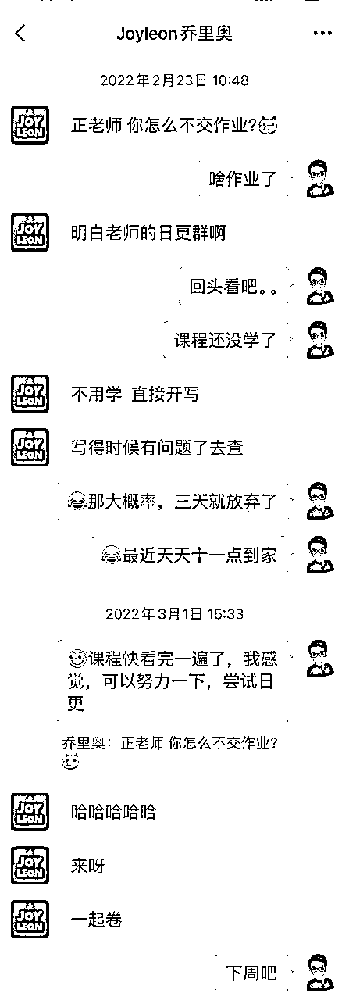
我把公开日更写作划分了三个阶段，这也是我转行的三个阶段。
不上班，刚开始做自由职业，如果没有明确的方向，你可能每天的时间会很多，这意味着，某件事情，你今天做可以，明天做也没啥问题，甚至不做也无所谓。如果没有一个外在的约束，时间久了，可能会导致你整个人过于散漫，最后只能跑回去上班。
我每天的能量来源是，在公众号日更一篇不少于600字的原创文章（我是从 2022 年 3 月 7 号，开始在公众号日更写作，一直持续到现在），这样起码可以保证，我每天能获取到有价值的信息，我能产生有价值的思考。
无须方方面面都自律，你只要挑选最有用的那件事，坚持下去就可以了。比如我每天都在公众号更新一篇文章，只要我今天更新了这篇文章，我今天就过的不算差。
在这个日更写作的第一个阶段，任何合法的内容都可以写，主要的目的是克服对写作的恐惧，同时锻炼把事情说清楚和想明白的能力。
公众号日更到 201 天的时候，我推出自己的「随喜咨询」服务，
什么是随喜咨询，就是不限定咨询范围和时长，咨询结束以后，对方觉得本次咨询值多少钱，给我多少钱就行。
你不是由你构成的，而是由你和其他人的多次碰撞构成的。这种碰撞是用未知去探索未知，因为你也不知道对方会来找你做什么咨询。
山本耀司说，「自己」这个东西是看不见的，撞上一些别的什么，反弹回来，才会了解「自己」。
我的「脱单陪跑」就是某次随喜咨询以后的产物，在这次咨询结束以后，对方发了我 666 元的红包。对方在我的帮助下，用了两个月多，成功脱单，这让我意识到，我好像有能力，做好帮人脱单这件事。
每次随喜咨询结束以后，你都可以复盘复盘：
如果你能一段时间不厌其烦的做某件事，也许这件事情就是你的热情、你的天分所在。
在这个日更写作的这个阶段，如果能探索到自己一个明确的定位，建议尽快推出专栏、课程或者其它服务。比如我在这个过程中，有写过《印象笔记的使用教程》、开过《感恩日记》的训练营、搞过《写作打卡》的知识星球等等。
可能这个过程中赚不到什么钱，但是你积累了做产品的能力，积累了挖掘需求的能力，赚钱就是一个拼图游戏，通过做具体的事情，去掌握某方面的能力。
在这个阶段，单纯的坚持日更写作没有意义，你需要先找到一个想做的事情，比如，教别人写感恩日记。然后通过持续日更写作的方式，去不断优化和思考这件事，同时在这个过程中放大影响力获取流量。
前面提到，我的「脱单陪跑」服务，就是某次咨询以后的产物，当时这个朋友找我咨询完情感问题后，给我发了 666 元的红包，我主动让对方开了一个「情感修炼手册」的飞书文档共享给我，让对方不断记录下关于找对象、结婚的想法和遇到的问题。
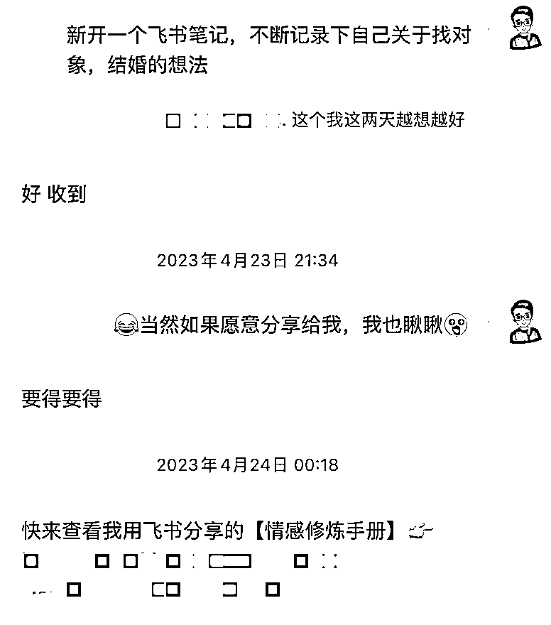
对于我的随喜咨询来说，很多的咨询结束以后的随喜金额，在 200 元的红包以内，而这次 666 元的金额，对我来说就是一个异常值。
既然是异常值，就值得主动回访，主动进行追踪，看看能不能探索出来一个更高客单价的产品，我的「脱单陪跑」服务，就是在这个过程中，完成了用户画像、服务模式、价格等方面的确定。
在《邻家的百万富翁》这本书中提到：为什么你不富裕？也许是因为你没有找准市场上的位置。以富人、富人子女和富有的丧偶者为目标的市场有无限商机，那些为富人服务的人往往也成了富人。
在这个阶段，写作是你的核心竞争力，核心竞争力，就别人短时间内无法掌握的能力或者资源，用明白老师在课程中的话说：
写作 = 一切，写作 = 输入 + 思考 + 输出 + 方法 + 学习 + 需求 + 商业 + 耐心 + 长期 + 意义 + 流程 + 产品 + 营销 + 认识自己 + 认识世界 + ……等等。
市面上的一对一陪跑，一般都是拉个微信群或者微信上一对一的私聊，这种方式有个问题：在微信上一句一句的聊天，很多时候是没办法深度的去讨论和处理问题的。
因为消息在不断的蹦出来，让你只能局限于处理眼前的消息。两个人在微信上你来我往的聊天，用不了多久就会产生几十条甚至上百条消息。
另外在微信上一句一句的聊，是很浪费时间的，甚至会串台，这意味着，我没办法同时服务很多的客户，项目就没办法进行放大。
我选择的做法是：脱单陪跑的学员，遇到问题，我都是建议先去「飞书文档」上描述问题，这样做的好处有：一方面是问题描述的更完整，另一方面是可以把内容沉淀下来，方便学员后续进行回顾，也可以让我避免串台。
学员在「飞书文档」描述完以后，我会在「飞书文档」上给建议和反馈，遇到无法解决，需要实时沟通的时候，才会在微信上聊天，其次微信聊完以后，我会让学员根据聊天的内容，在「飞书文档」中进行复盘。
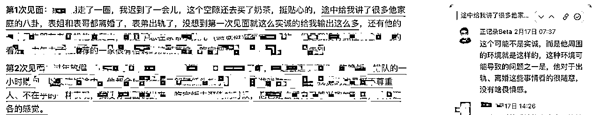
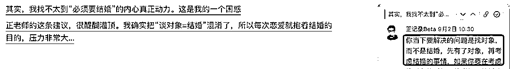
确定了服务模式以后，接下来要解决定价的问题。我找了已经脱单的学员，调研，我如果正式推出这服务，定价多少合适呢？学员和我说，至少值钱两三千。
还看到「 陌上花开HIMMR」公众号有个21天的脱单训练营，费用是 2999 元，所以我脱单陪跑起步价是：女生 2999 元，男生：3499 元，后续还会不断涨价。
男生比女生贵的原因是，一方面的原因是，我的目标用户是女生，但是不能少了男生用户的案例和视角，另一方面的原因是，在帮助男生脱单陪跑的过程中，我常常觉得自己像个语文老师，需要教男生如何去沟通，如何去表达，所以贵一点。
脱单陪跑存在的意义，并不是保证你每次都能成功，而是可以辅助你提高单次的成功率，所以我把服务时间定为：用户脱单成功后的第 31 天，结束陪跑服务。
假设你每次接触相亲对象的脱单概率是：10%（假定每次接触的相亲对象都是独立事件 ）。
猜一下连续尝试20次，你脱单的概率是多大，答案是:88%。
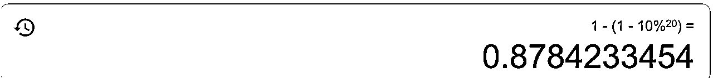
你通过我的辅助，比如，把单次脱单的概率，提高了 10%，那现在你单次脱单的概率是：20%。你只需要连续尝试10次，脱单的概率就能达到 89%。
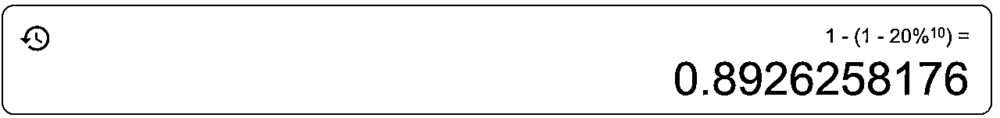
没有具体的时间限制，是因为每个人的基础不一样，有人脱单需要一两个月，有人需要一两年，甚至更久的时间。
如果「脱单陪跑」的服务，有了具体的时间限制，客户容易变得焦虑，人在焦虑的情况下，要么做出错误的决策，比如，闪婚；要么放弃这个事情，觉得一个人也挺好。
第一个学员成功脱单以后，我并没有推出正式的「脱单陪跑」服务，只是零星的偶尔在公众号的文章中提一下。
没有正式推出的原因是，一方面是我觉得我没有准备好，为此我学了两门恋爱的课程，读了几十本，脱单、恋爱、亲密关系的书籍。另外一方面是，我不敢推出这个服务，我害怕没有人来找我报名，所以一直用我没有准备好来安慰自己。
李睿秋在《打开心智》这本书中提到，过度准备，是一种逃避，许多人往往会有一种心态：我不是不愿意行动，但我觉得还没有准备好，我想等一切都准备就绪，再开始行动。这会导致什么结果呢？要么是错失良机。
老俞在《好运》这本书中提到：贝佐斯的四个秘密武器之一就是：高速决策。他说，当你获得了七成所需信息后，大部分决策就可以成形了。若你要求信息量达到90%，大多数情况下，你的决策就有些慢了
在 2023 年 8 月 13号的时候，有人从知乎加我，说是对我的「脱单陪跑情感咨询」感兴趣，想要了解了解，做了简单的答疑以后，对方并没有报名。
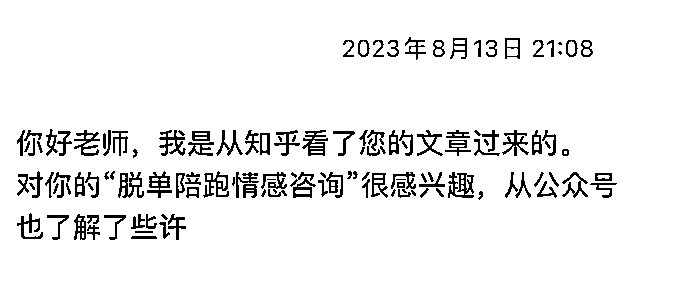
没想到在 2023 年 9 月 1 号的时候，这个人直接在微信上和我说「我要下单」，因为当时还没有推出正式的服务，所以给对方算了 1999 元，这次对方没有任何犹豫直接下单了。
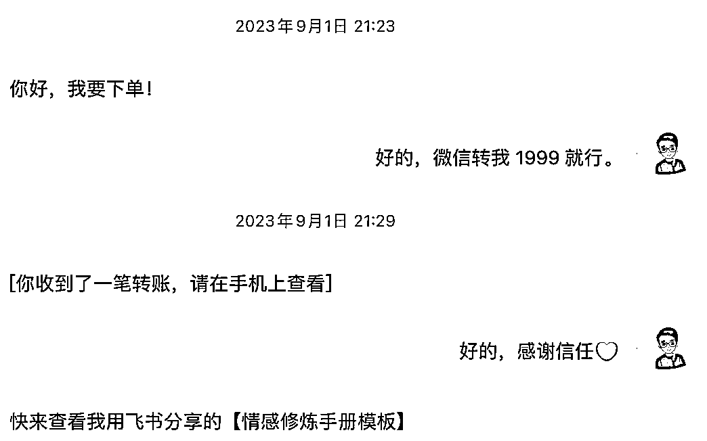
当你有了明确的定位以后，一定要多平台分发内容，这样才能更快完成方向的验证。
我对一个项目完成从0到1的标准有两条，有第一个成功案例，有一个纯陌生人客户。
第一个陌生人下单以后，我知道我的这个方向能成，之后我用了十天时间来打磨我的正式服务说明书。
于 2023 年 9 月 11 号的时候（距离我第一次日更已经过去554天了），我在公众号推出了「正记录Beta的「1v1脱单陪跑」说明书」的文章，反复修改了好多遍，可能是第一次做高客单价的服务，总觉得还可以更好。
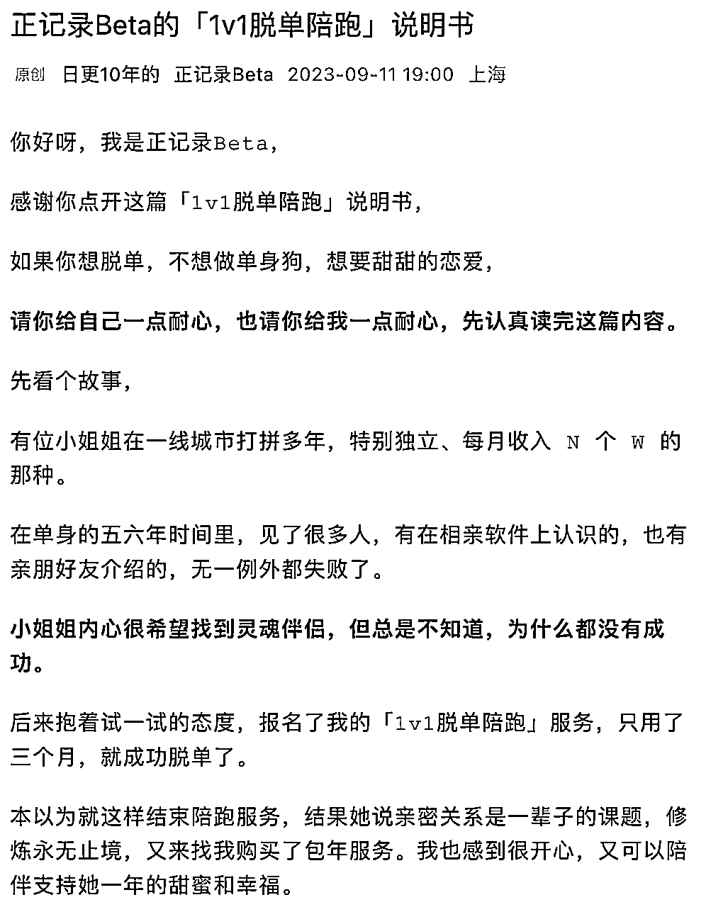
如果是几十几百的低客单，有个海报可能就够了，3000元左右的客单价，对于不少人来说，是一笔不小的钱，所以需要一篇正式的说明书。
根据我后面的成交经验，凡是认真看了这篇说明书的目标客户，我后续的成交都很快。
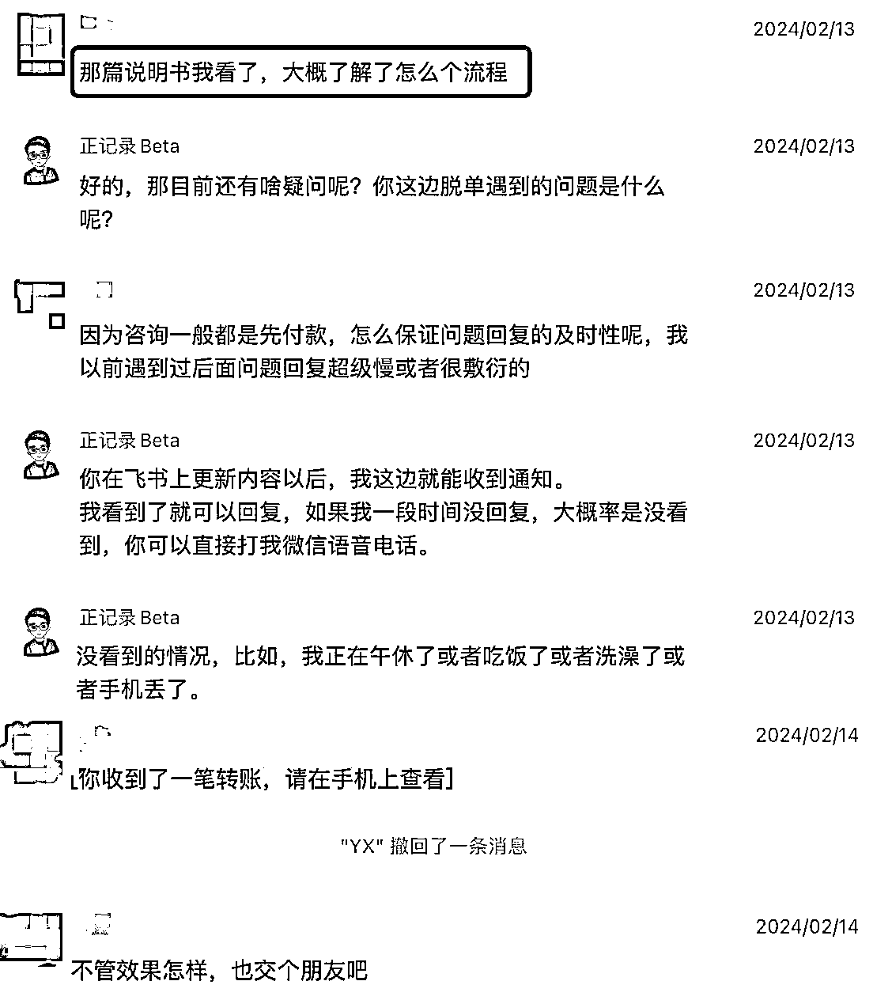
从2023年9月份正式服务推出以后，一直到2024年1月份之前，这个项目都没有突破单月收入过万元，最多的一个月是九千多。
我一直在找原因了，为啥我公众号的文章阅读量不高，研究了不少起标题的方法都没有什么卵用。直到看到圈友张日在微信群里面的一句话，让我意识到我的问题在哪了，我的公众号日更的内容，就是在乱七八糟的写。
什么个人成长的、关于引流的、关于赚钱的，一周七篇文章，情感、脱单相关的文章，最多只有一篇，这就是我公众号文章阅读量低的原因。
这样乱七八糟、没有定位的公众号日更 ，我写了 600 多天，我陷入了惯性思维，难以跳出原有的循环，阅读量很惨淡，我都不好意思和别人说，我日更 600 多天了。
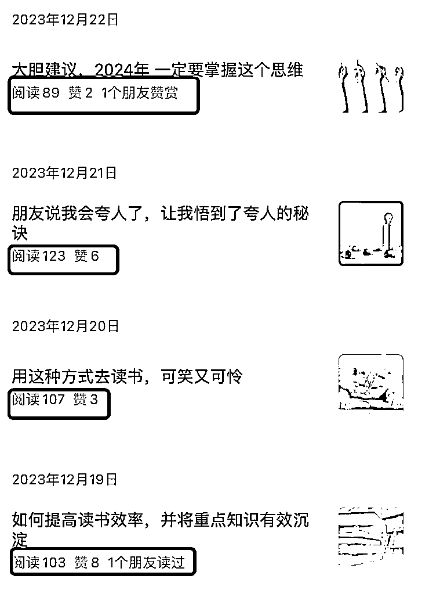
从2024年1月份开始，我决定公众号以后的内容，就只写情感类型，乱七八糟个人成长相关的内容，以后就不要在公众号发了，既不能涨粉丝，又没有阅读量，白白耽误功夫。
既然已经找到了「脱单陪跑」的定位，也成功变现、成功帮客户脱单了，那就专注在公众号写定位相关的内容，想明白这点以后，我太开心了。
到了二月份，我回顾了一下，一月份的公众号文章，其中阅读量过千的文章有九篇，这九篇中有五篇的阅读量过万了，至此，这个项目，在2024年1月份的收入过万元了。
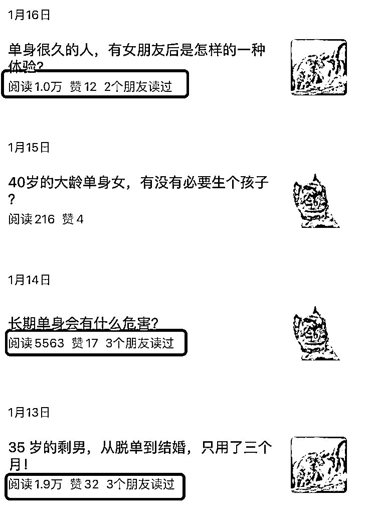
报名了炮爷&傅超人的创富合伙人以后，我观察到他们成交客户的时候，会用一个提前缴纳多少定金，锁定不涨价名额，我也学习他们，采用这样的策略，在二月份成交了好几个客户。
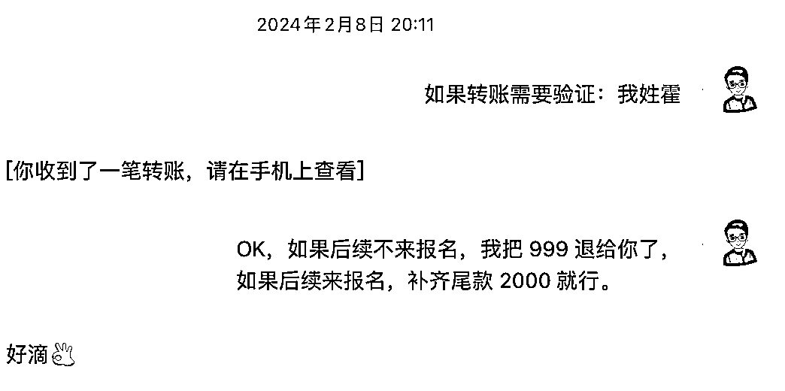
光合大佬说，高阶的输出能力是破圈必备的。公众号明确输出情感内容以后，我二月份公众号的文章，其中阅读量过千的文章有十一篇，这十一篇中有五篇的阅读量过万了。
有个做情感播客的主播，主动找我谈合作，找我的原因是，说是在她的微信群看到有人转发我的文章，感觉写的不错，于是主动找我聊了聊合作。
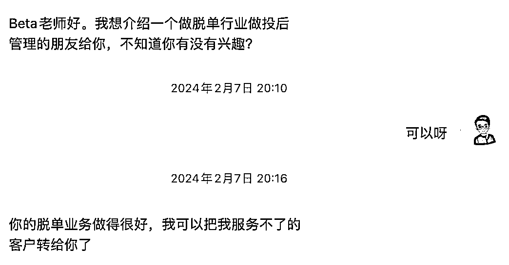
年前彼此语音聊了聊，约定好合作的模式以后，年后上班后，对方成功给我推荐了一个客户。
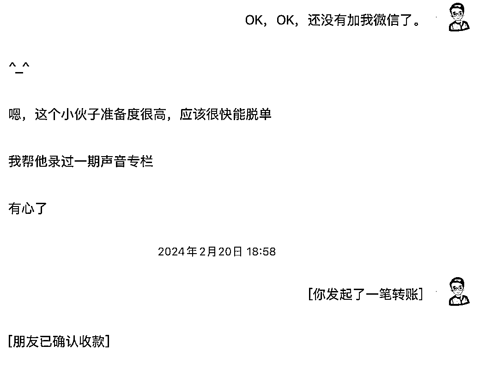
在 2023 年年底的时候，我分销了 100 多份炮爷&傅超人的小报童专栏，借助这个机会，我搞了自己的陪伴群。
我日常在陪伴群里面，分享我做「脱单陪跑」过程中的一些思考，让大家了解我做的事情，群里有不少朋友，会把我的「脱单陪跑」的说明书，分享给他们单身的朋友。
用其中一个朋友的话，我就顺带支持下你的事业，她是我的一个好朋友，帮助她顺利脱单了就行。
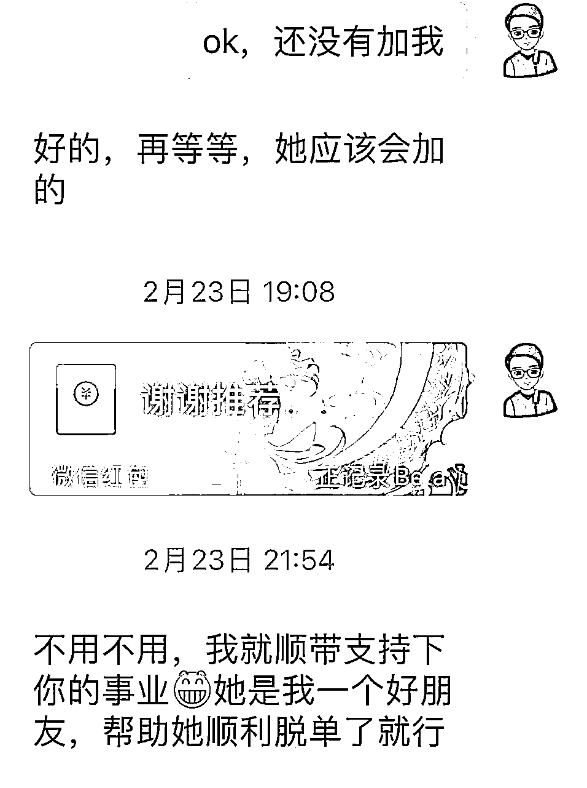
陪伴群除了这个附带的作用，还能给我提供能量，比如，我遇到二选一的时候，在群里发起一个讨论，大家集思广益，一会就有了结果。
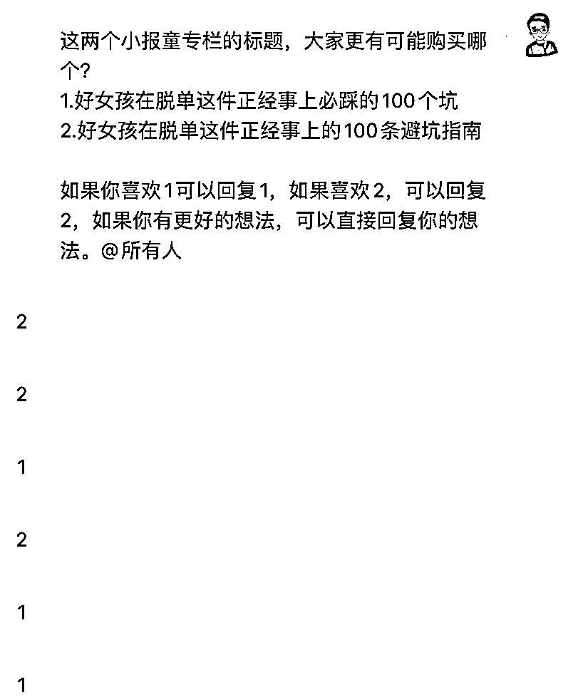
张潇雨老师说，人生会永恒地面临孤独问题。不仅是终极的孤独，还有很多日常性的孤独。所以在朋友之间，建立起某种「互助会」一样的组织，大家在没有太多功利性的情况下，彼此交流、分享、相互帮扶，其实会快乐很多。
2月初的时候，我回顾了过去1个月的公众号文章，尤其是阅读量过万的五篇文章，看看在我公众号粉丝不足 3000 的情况下，为什么能获得过万的阅读量。
拆解的结果是：文章标题的关键词，精准命中了目标用户。
比如，我脱单陪跑的一类目标用户是：相亲了好多次，都没有脱单的人。所以，我的公众号文章标题中会添加：相亲，这样的关键词。
重复这个爆文的规律，二月份的时候，我在公众号写了「大部分人相亲的时候，都不会聊这个话题，但是聊好了，大概率能脱单」的文章，
这次是压中了两个关键词：相亲、脱单，这篇文章获得了 3.7 万的阅读量，有不少人加我微信。
基于以上四点，让我二月份的时候，这个项目收入过三万元。
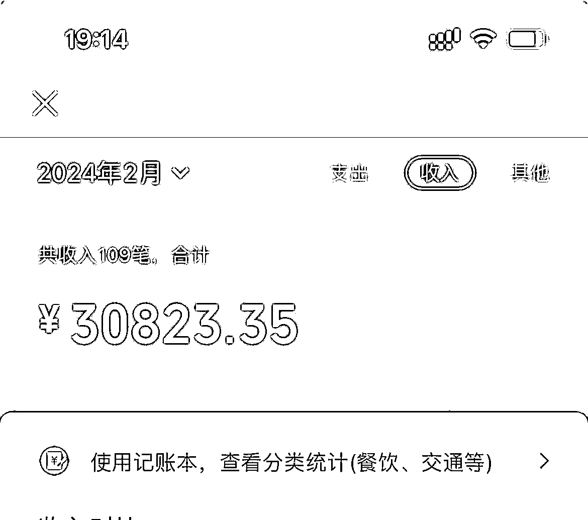
先做低客单价，然后转化中客单价，然后再转化高客单价。这种转化逻辑属于职场打工升职加薪的逻辑，不是创业找需求的逻辑。
以在职场做程序员为例子，先是初级程序员，然后是中级程序员，再然后是高级程序员……从低客单价逐步转化到高客单价，这个逻辑听起来，没啥问题，符合常识。
但是这种转化，一方面是要依赖于用户的成长，另外一方面可能还需要给用户不断制造焦虑。更重要的是，低客单价、中客单价、高客单价的目标用户很可能不是同一批人，这也是为啥有些人的低客单价产品很难转化到高客单价产品的原因之一。
创业找需求的逻辑，找到了合适的需求和目标人群，就可以做高客单价的产品或者服务。
普通人做知识付费，一定要做高客单价，因为做低客单价，你做不过机构。你会持续的陷入流量焦虑以及学员没有行动和结果的焦虑中。
对于普通人来说，十倍增长，在没有定位的时候，应该是十倍的思考。
比如，原来一个月读一本书，现在可以变成一个月读十本，原来一个月写一篇文章，现在一个月可以写十篇文章。
普通人如果有了定位，那么十倍增长，可以从两方面入手：
第一，你的价格能不能比原来高十倍
比如，我2023年卖的印象笔记的小报童专栏，目前价格是79块钱，能不能想办法，把这个做到790甚至7900的价格呢。
我搞「脱单陪跑」的服务，正式推出来价格女生2999，男生3499，这个比原来印象笔记79元的价格，高了三四十倍，难度系数并没有搞三四十倍。
第二，你的流量能不能有十倍增长
比如，在某个平台专注写某个方面的内容，不要搞大杂烩。
再比如，能不能把内容分发到其它平台，能不能找人合作，对方给你介绍人，你给对方佣金。
不少人在转型的时候，有个误区，我过往的能力能否用得上。
而不是去想，做了这个选择以后，经过一段时间的学习和实践，我能掌握什么新的能力。
如果你手里有一把锤子，所有东西看上去都像钉子。这个世界很复杂，不是所有问题都是相同的。
就像在职场打工的产品经理日常所用到的能力和做转型所用到的能力，可能是两个完全不一样的能力。
你能力圈的边界，取决于你手中的工具。如果你手里面只有产品经理这一个工具：
一方面你的选择会很窄，比如你不会去考虑适合程序员的转型、不会去考虑适合设计师的转型。
另外一方面你的竞争会很激烈，因为你的产品经理同行，也在想「产品经理适合做哪方面的转型」。
如果按照这个思路去转行，那么你只会造出来更快的马车，而不会发明汽车和飞机之类的新的交通工具。
我的客户里面有不少女生，在脱单中的卡点有：
1.择偶标准不清晰，问喜欢什么样的，喜欢帅的，关于帅没有准确定义，也没有想过为了帅，愿意做出哪些妥协。
某个女生说喜欢帅的，她喜欢帅的前提是，对方的收入不能低于她。她对外说的时候，默认别人是知道这个常识：你给我介绍的对象，收入不能低于我……这是她的常识，不等于是别人的常识，你不说别人这么知道呢？
2.有的是来自于父母的压力，比如，每次去相亲，父母喜欢事无巨细的问，感觉很有压力，但又不知道该如何应对，也不知道父母给的择偶标准对不对。
上一代人和年轻人的爱情脚本不一样，自然择偶标准不一样，上一代人的爱情大部分产生于婚后，他们恋爱的时间很短，他们的恋爱经验大概率不适合你……
3.有的是上一段或者前阶段感情都失败，自己也不知道问题出在哪里，总感觉是自己哪里没有做好，也不知道该如何做好，需要有人陪着一起去处理感情中的问题。
……
高客单价项目的核心是解决问题，而不是堆砌权益和卖点，客单价越高，越不能堆砌很多权益和卖点。
而是要聚焦在一个核心点强化强化再强化，让用户感受到你在这个痛点解决方案上的专业度和价值感。反之，客单价低才是堆权益，让他觉得花100买到1000的爽点。
目标客户一定要精准，产品不要分散，比如，我不做相亲介绍的红娘服务。
有人问我，有些人就是没资源，我这边如何解决，这说明这些人不是我的目标用户。
恋爱中遇到问题的，分手挽回的，我能不能做了，我也能做，但是我并不想做，恋爱这个涉及到很长亲密关系维护，已经脱单的人，并不是我的核心目标用户。
我希望过五年十年，我可以成为脱单专家，而不是恋爱专家或者婚姻专家。
关于定位最好可以用一句话，解释清楚，你是做什么的，比如：
想脱单，找正正，打破限制信念、澄清若干问题，带你享受甜甜的💘恋爱。
再比如：自青在《30岁人生开挂7步法》这本书中提到，他发帖找家教的时候，特意标准了「专为中下游学生辅导」的标题，同时写下了他当时学习有多差，又是如何提升自己的英语和数学等级的具体细节和方法。然后，电话接踵而至。从那时起，作者自青在上大学期间每月能挣150～200万韩元的课外辅导费。
1.确定要转型之前，先和家里人做好沟通，不然遇到困难、崩溃的时候，如果家里人不支持你、不理解你，你很容易崩溃放弃的。
2.要持续公开写作，这是每个人都能利用的杠杆，某大佬说，他打造个人品牌的方法特别简单，就是每天写一篇文章。
这样一方面可以让你的专业能力越来越强，另外一方面也能让越来越多人知道你。
3.单次咨询大概率解决不了问题，遇到值得帮助的人、懂得感恩的人，要持续主动跟进对方，看看能挖掘出来什么需求。
4.按照知乎的「活跃领域」划分，情感领域包含了「个人成长」也包含了「人际交往」之类的。
难怪我以前关注的不少情感博主，都会时不时聊一聊个人成长、人际交往之类的。
我以前谈「个人成长」的时候，总感觉有点虚，因为什么都能扯上个人成长，找不到一个切实的落脚点。
5.有对象的好处之一是，能更清晰的认识自己。如果不和其他人碰撞，其实你很难看清自我，虽然日常中你经常和其它人碰撞，
但是亲密关系中的碰撞才是最根本的、最底层的，这种碰撞带来的成长也是最快的。
甚至有人说，成长的办法之一是不停的谈对象，谈对象这个可以，不停的谈不可以，因为不道德。
6.不要在找定位上浪费太多的时间，先行动起来，积累其它的能力，行动的过程中，定位自然会浮现。
我原来是个程序员，在 2023 年以前，你让我去做情感领域，帮别人脱单，打死我都不会去做，因为从我过往的经历，我知道我没有这个能力。
7.向有结果的人请教，可以少走弯路，日常我向炮爷&傅超人，请教了不少，在此特别感谢他们。
————
尾声，内容就到这里哈，
希望没有浪费各位的时间，祝各位生财有术！
这篇复盘首发于「生财有术」的知识星球，如果你是通过其它渠道看到的这篇文章，可以考虑付费加入「生财有术」去阅读更多类似的文章，提高赚钱的能力，加入「生财有术」后如果不满意，可以三天无理由全额退款。
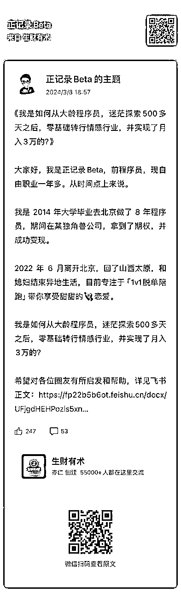